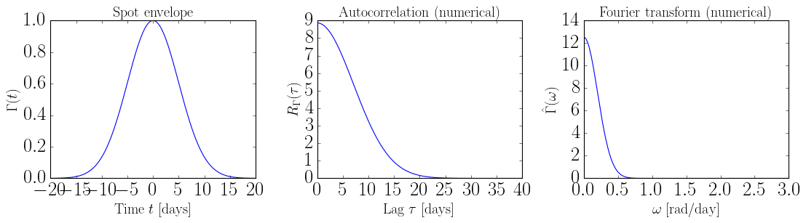
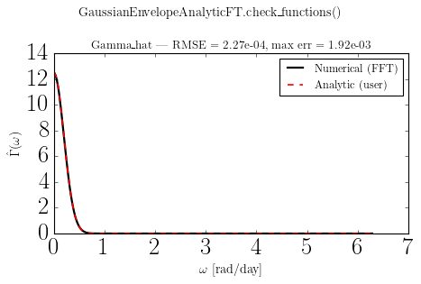
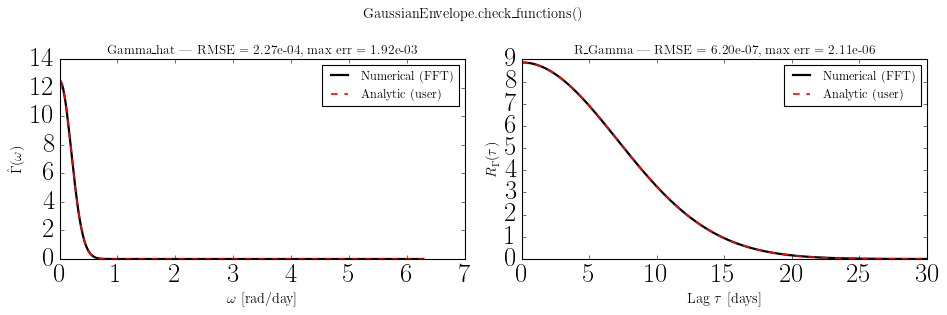
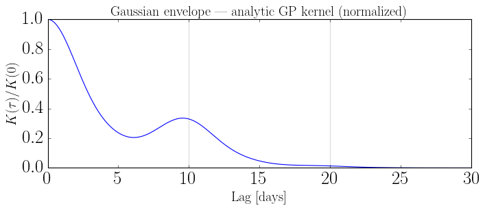

Custom Envelope: Gaussian Spot Profile#
This notebook shows how to implement a Gaussian spot envelope by subclassing EnvelopeFunction, and how to progressively add closed-form analytic expressions for Gamma_hat(omega) and R_Gamma(tlag).
check_functions() is used at each step to verify the analytic implementation against the FFT-based numerical baseline and to measure the accuracy and runtime speedup of each approach.
Sections
Analytic equations for the Gaussian envelope
Minimal implementation —
Gamma(t)onlyAdd analytic
Gamma_hat(omega)— accuracy and timingAdd analytic
R_Gamma(tlag)— accuracy and timingBuild a
SpotEvolutionModelwith the finished envelope
[1]:
import sys
sys.path.append("../..")
import time
import numpy as np
import matplotlib.pyplot as plt
import jax.numpy as jnp
from src_jax import (
EnvelopeFunction,
VisibilityFunction,
SpotEvolutionModel,
AnalyticKernel,
)
label_fs = 18
np.random.seed(42)
1. Analytic equations for the Gaussian envelope#
A Gaussian spot profile is centred at \(t = 0\) with standard deviation \(\sigma\):
The Fourier transform and autocorrelation both have closed forms.
Fourier transform \(\hat{\Gamma}(\omega)\)#
The Fourier transform of a Gaussian is a Gaussian:
Autocorrelation \(R_{\Gamma}(\tau)\)#
Both expressions are real and symmetric, and the integrals converge for all \(\sigma > 0\).
2. Minimal implementation — Gamma(t) only#
The only required methods are tau_spot (a property returning the characteristic timescale) and Gamma(t). Everything else — Gamma_hat, R_Gamma, kernel_support, param_dict — has working defaults in the base class that fall back to FFT-based numerical approximations.
check_functions() detects which functions have been overridden and reports no analytic overrides found when only the numerical fallbacks are in use.
[2]:
class GaussianEnvelopeNumerical(EnvelopeFunction):
"""Gaussian spot envelope — Gamma(t) only, no analytic overrides."""
def __init__(self, sigma: float):
self._sigma = float(sigma)
@property
def tau_spot(self) -> float:
return self._sigma
@property
def param_dict(self) -> dict:
return {"sigma": self._sigma}
def Gamma(self, t):
return jnp.exp(-0.5 * (t / self._sigma) ** 2)
[3]:
env_num = GaussianEnvelopeNumerical(sigma=5.0)
print("param_dict :", env_num.param_dict)
print("tau_spot :", env_num.tau_spot)
print("kernel_support :", env_num.kernel_support(), "days")
print()
errors = env_num.check_functions()
print("errors:", errors)
param_dict : {'sigma': 5.0}
tau_spot : 5.0
kernel_support : 30.0 days
GaussianEnvelopeNumerical: no analytic overrides found for Gamma_hat or R_Gamma — nothing to check.
errors: {}
[4]:
t = np.linspace(-20, 20, 500)
lag = np.linspace(0, 40, 500)
om = np.linspace(0, 3, 500)
fig, axes = plt.subplots(1, 3, figsize=(14, 4))
axes[0].plot(t, env_num.Gamma(jnp.array(t)))
axes[0].set_xlabel(r"Time $t$ [days]", fontsize=label_fs)
axes[0].set_ylabel(r"$\Gamma(t)$", fontsize=label_fs)
axes[0].set_title("Spot envelope", fontsize=label_fs)
axes[1].plot(lag, env_num.R_Gamma(jnp.array(lag)))
axes[1].set_xlabel(r"Lag $\tau$ [days]", fontsize=label_fs)
axes[1].set_ylabel(r"$R_\Gamma(\tau)$", fontsize=label_fs)
axes[1].set_title("Autocorrelation (numerical)", fontsize=label_fs)
axes[2].plot(om, env_num.Gamma_hat(jnp.array(om)))
axes[2].set_xlabel(r"$\omega$ [rad/day]", fontsize=label_fs)
axes[2].set_ylabel(r"$\hat{\Gamma}(\omega)$", fontsize=label_fs)
axes[2].set_title("Fourier transform (numerical)", fontsize=label_fs)
fig.tight_layout()
plt.show()

3. Add analytic Gamma_hat(omega)#
Override Gamma_hat with the closed-form Gaussian Fourier transform. check_functions() will now detect the override and compare it to the FFT baseline, reporting the RMSE and max absolute error.
[5]:
class GaussianEnvelopeAnalyticFT(EnvelopeFunction):
"""Gaussian envelope with analytic Gamma_hat(omega)."""
def __init__(self, sigma: float):
self._sigma = float(sigma)
@property
def tau_spot(self) -> float:
return self._sigma
@property
def param_dict(self) -> dict:
return {"sigma": self._sigma}
def Gamma(self, t):
return jnp.exp(-0.5 * (t / self._sigma) ** 2)
def Gamma_hat(self, omega):
# FT of Gaussian: sigma * sqrt(2*pi) * exp(-omega^2 * sigma^2 / 2)
return self._sigma * jnp.sqrt(2 * jnp.pi) * jnp.exp(-0.5 * (omega * self._sigma) ** 2)
Check that our analytic equation is correct by comparing it to the numerical solution:
[7]:
env_ft = GaussianEnvelopeAnalyticFT(sigma=5.0)
errors_ft = env_ft.check_functions()
Gamma_hat RMSE = 2.27e-04, max err = 1.92e-03
analytic time = 0.690 ms
numerical time = 0.065 ms

For this evaluation the analytic time is slower than the numerical time because of the JAX JIT compilation on the first run. As a better comparison, we can compare the timing after JIT warmup.
Timing: analytic vs numerical Gamma_hat#
Compare evaluation time for 1 000 calls on a 500-point omega grid.
[8]:
omega_arr = jnp.linspace(0, 3.0, 500)
n_calls = 1000
# Ensure both numerical grids are pre-built before timing
env_num._ensure_numerical_grids()
env_ft._ensure_numerical_grids()
# Warm up JAX JIT
_ = env_num.Gamma_hat(omega_arr)
_ = env_ft.Gamma_hat(omega_arr)
t0 = time.perf_counter()
for _ in range(n_calls):
env_num.Gamma_hat(omega_arr)
t_numerical = (time.perf_counter() - t0) / n_calls * 1e3
t0 = time.perf_counter()
for _ in range(n_calls):
env_ft.Gamma_hat(omega_arr)
t_analytic = (time.perf_counter() - t0) / n_calls * 1e3
print(f"Gamma_hat numerical : {t_numerical:.3f} ms/call")
print(f"Gamma_hat analytic : {t_analytic:.3f} ms/call")
print(f"Speedup : {t_numerical / t_analytic:.1f}x")
Gamma_hat numerical : 0.193 ms/call
Gamma_hat analytic : 0.129 ms/call
Speedup : 1.5x
If you were to increase n_pts to something large (e.g. 100k+), the analytic version would likely pull ahead because the np.interp of the numerical solution cost grows linearly while the JIT-compiled XLA kernel stays roughly flat.
4. Add analytic R_Gamma(tlag)#
Override R_Gamma with the closed-form Gaussian autocorrelation. check_functions() now checks both overrides simultaneously.
[9]:
class GaussianEnvelope(EnvelopeFunction):
"""
Gaussian spot envelope with fully analytic Gamma_hat and R_Gamma.
Parameters
----------
sigma : float
Standard deviation of the Gaussian profile [days].
"""
def __init__(self, sigma: float):
self._sigma = float(sigma)
@property
def tau_spot(self) -> float:
return self._sigma
@property
def param_dict(self) -> dict:
return {"sigma": self._sigma}
def Gamma(self, t):
return jnp.exp(-0.5 * (t / self._sigma) ** 2)
def Gamma_hat(self, omega):
# FT of Gaussian: sigma * sqrt(2*pi) * exp(-omega^2 * sigma^2 / 2)
return self._sigma * jnp.sqrt(2 * jnp.pi) * jnp.exp(-0.5 * (omega * self._sigma) ** 2)
def R_Gamma(self, lag):
# Autocorrelation of Gaussian: sigma * sqrt(pi) * exp(-lag^2 / (4*sigma^2))
return self._sigma * jnp.sqrt(jnp.pi) * jnp.exp(-0.25 * (lag / self._sigma) ** 2)
[11]:
env = GaussianEnvelope(sigma=5.0)
errors = env.check_functions()
Gamma_hat RMSE = 2.27e-04, max err = 1.92e-03
analytic time = 0.747 ms
numerical time = 0.049 ms
R_Gamma RMSE = 6.20e-07, max err = 2.11e-06
analytic time = 0.755 ms
numerical time = 0.048 ms

Timing: analytic vs numerical for both functions#
Compare R_Gamma and Gamma_hat evaluation time across 1 000 calls on a 500-point grid.
[12]:
lag_arr = jnp.linspace(0, 6 * env.tau_spot, 500)
omega_arr = jnp.linspace(0, 3.0, 500)
n_calls = 1000
# Pre-build numerical grids and warm up
env_num._ensure_numerical_grids()
env._ensure_numerical_grids()
_ = env_num.R_Gamma(lag_arr); _ = env.R_Gamma(lag_arr)
_ = env_num.Gamma_hat(omega_arr); _ = env.Gamma_hat(omega_arr)
results = {}
for label, obj, arr, fname in [
("numerical", env_num, lag_arr, "R_Gamma"),
("analytic", env, lag_arr, "R_Gamma"),
("numerical", env_num, omega_arr, "Gamma_hat"),
("analytic", env, omega_arr, "Gamma_hat"),
]:
func = getattr(obj, fname)
t0 = time.perf_counter()
for _ in range(n_calls):
func(arr)
results[(fname, label)] = (time.perf_counter() - t0) / n_calls * 1e3
print(f"{'Function':12s} {'Method':10s} {'ms/call':>9s} {'speedup':>8s}")
print("-" * 48)
for fname in ("R_Gamma", "Gamma_hat"):
t_num = results[(fname, "numerical")]
t_an = results[(fname, "analytic")]
print(f"{fname:12s} {'numerical':10s} {t_num:9.3f}")
print(f"{fname:12s} {'analytic':10s} {t_an:9.3f} {t_num/t_an:7.1f}x")
Function Method ms/call speedup
------------------------------------------------
R_Gamma numerical 0.184
R_Gamma analytic 0.127 1.4x
Gamma_hat numerical 0.161
Gamma_hat analytic 0.130 1.2x
5. Build a SpotEvolutionModel with the Gaussian envelope#
The finished GaussianEnvelope plugs directly into SpotEvolutionModel and AnalyticKernel just like any built-in envelope.
[13]:
visibility = VisibilityFunction(
peq=10.0,
kappa=0.3,
inc=np.pi / 3,
)
model = SpotEvolutionModel(
envelope=GaussianEnvelope(sigma=5.0),
visibility=visibility,
sigma_k=0.01,
)
print("param_keys:", model.param_keys)
print(model)
param_keys: ('peq', 'kappa', 'inc', 'sigma', 'sigma_k')
SpotEvolutionModel(
envelope=GaussianEnvelope({'sigma': 5.0}),
visibility=VisibilityFunction(peq=10.0, kappa=0.3, inc=1.047),
sigma_k=0.01
)
[16]:
ak = AnalyticKernel(model).build_jax()
lag = np.linspace(0, 3 * model.peq, 300)
K = ak.kernel(lag)
fig, ax = plt.subplots(figsize=(9, 4))
ax.plot(lag, K / K[0])
for n in range(int(lag[-1] / model.peq) + 1):
ax.axvline(n * model.peq, color="k", alpha=0.15, lw=1)
ax.set_xlabel("Lag [days]", fontsize=label_fs)
ax.set_ylabel(r"$K(\tau) / K(0)$", fontsize=label_fs)
ax.set_title("Gaussian envelope — analytic GP kernel (normalized)", fontsize=label_fs)
fig.tight_layout()
plt.show()
JAX kernel compiled in 0.27s
JAX kernel recompute in 0.23s

[ ]: